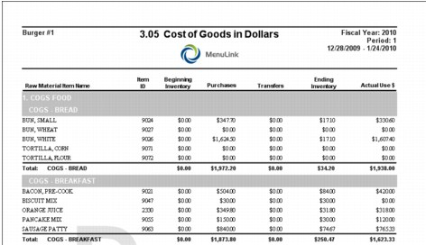

Purchasing Reports This section includes samples and descriptions of Purchasing-related reports available in MenuLink Client. Depending on your system set-up, you may not have access to all reports and selection options described. Contact your system administrator for more information. For general information on how to view and print reports, as well as selecting report options, see Viewing and Printing Reports. To access Purchasing reports, click Reports on the Purchasing Switchboard or click Reports from the Inventory System Switchboard. The reports in this example may differ from those appearing in your list. Contact your system administrator for more information. Cost Journal – Receiving by Vendor Report The Cost Journal – Receiving by Vendor report lists invoices, summarized by raw material category, also sorted by vendor. A summary appears at the end of the report. Cost Journal for Accounts Payable Report The Cost Journal for Accounts Payable report lists invoice and accounts payable information for the report period, sorted by vendor. A summary appears at the end of the report. Cost of Goods Report The Cost of Goods report shows how much of a raw material was used over a time period, sorted by category. This report gives valuable information for troubleshooting your actual food cost by item. You can see the Beginning Inventory (in Units), the total purchases for the time period (in Units), and the ending inventory (in Units). The Cost per Unit column is based on the purchases of the item for the time period selected. This report also gives you the actual usage in dollars by item, then subtotals it by category and the total actual usage for all items is at the end of the report. A grand total appears at the end of the report. Cost of Goods in Dollars Report The Cost of Goods in Dollars report is similar to the Cost of Goods report, except that it focuses on costs and does not include inventory unit information.  A summary appears at the end of the report. Cost of Goods Stacked Report The Cost of Goods Stacked report is similar to the Cost of Goods report except that it displays multiple store’s data on a single report stacked by store, with item, and category summaries. If reporting on multiple sites, they appear ‘stacked’ in the report. Grand Totals appear at the end of the report. Par Levels by Day Report The Par Levels by Day report is sorted alphabetically by vendor and lists the items purchased by category with their par levels for each day of the week. Par levels are maintained in the Item Lookup screen. Purchase Orders Report The Purchase Order report lists the purchase order information, sorted by vendor. Purchase Detail Report The Purchase Order Detail report lists purchase order/invoice details, sorted by category. Purchase Detail Stacked The Purchases Detail Stacked report is similar to the Purchases in Detail report, except that it displays store’s data on a single report stacked by store by item by category. If reporting on multiple sites, they appear ‘stacked’ in the report. A grand total appears at the end of the report, along with a list of sites and groups included in the report.